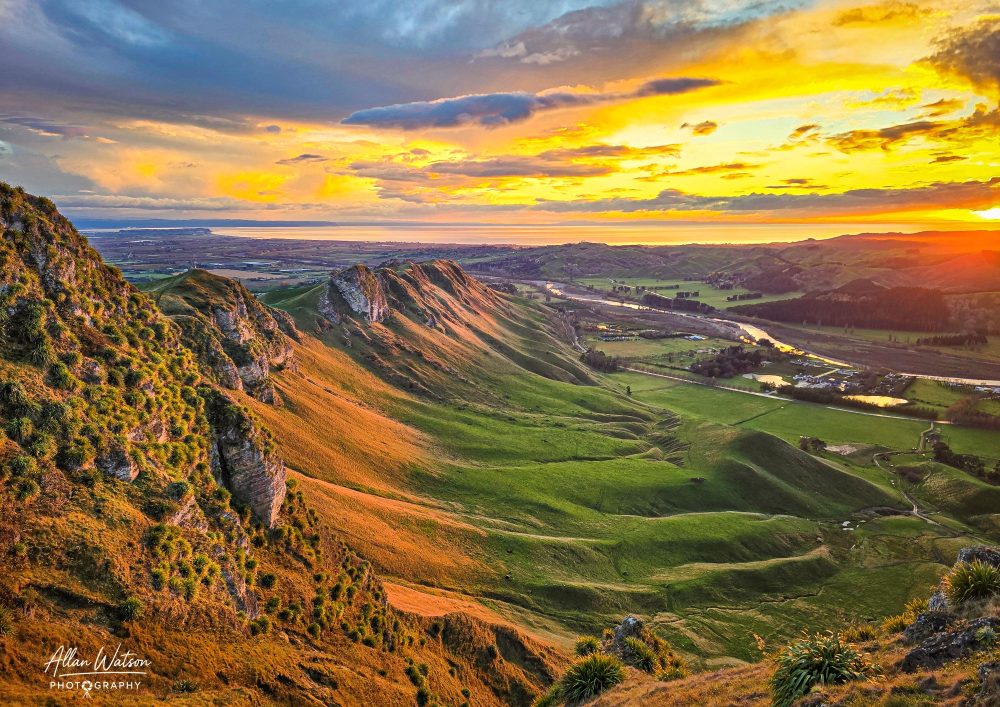
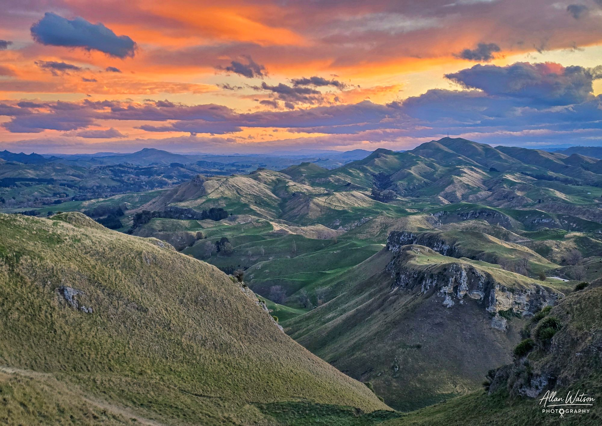
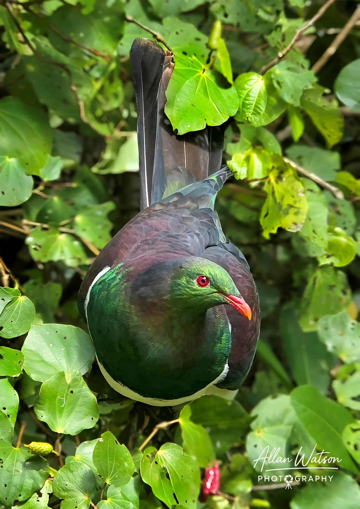

Te Mata Series
A Journey Through Hawke's Bay's Iconic Landscape
A Journey Through Hawke's Bay's Iconic Landscape
Te Mata Peak is one of Hawke's Bay's most recognisable landmarks. From the first light spilling across the Tuki Tuki Valley to golden sunsets over the western ranges and the quiet encounters with native wildlife, this collection captures the ever-changing character of this remarkable place.

Captured in the early morning light, this image looks east across the Tuki Tuki Valley with the Tuki Tuki River winding through the landscape. Havelock North and Napier are both visible as the first light of day reveals the beauty of Hawke's Bay.

A calm evening looking south-southwest along the crest of Te Mata Peak toward the Kohinurakau Range. As the sun disappears below the horizon, warm light gently washes across the rugged ridgeline, creating one of Hawke's Bay's classic sunset scenes.

A curious visitor along the Te Mata trails. This native New Zealand pigeon paused long enough to pose for a photograph, offering a quiet reminder that Te Mata Peak is not only renowned for its landscapes but also for its rich birdlife.